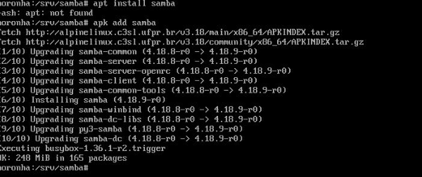
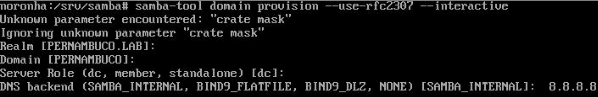
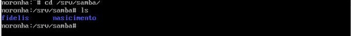
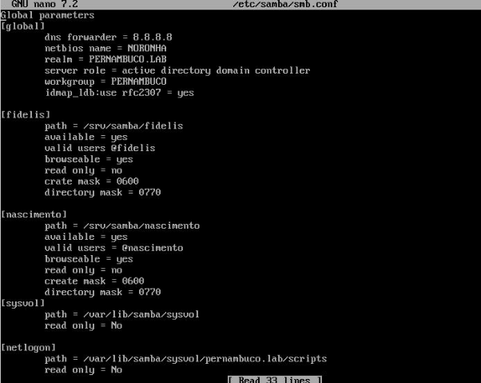
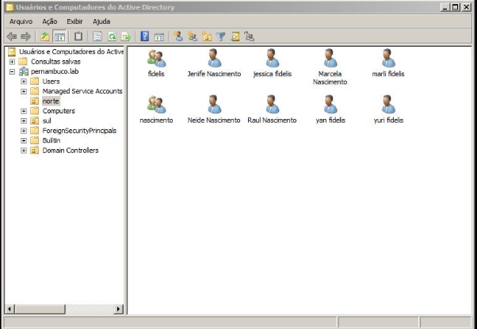
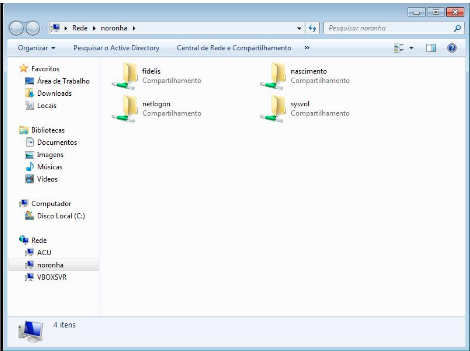

SMB
AVALIAÇÃO
Incluir o(s) nome(s) e o conteúdo do(s) arquivo(s) de configuração.
- Criar 2 grupos para dois de seus sobrenomes;
- Criar 4 usuários, dois para cada um dos sobrenomes;
- Compartilhar duas pastas com dois de seus sobrenome, compartilhado para o grupo com o sobrenome correspondente.
Instalação
Primeiro passo foi instalar o samba na máquina xarope.
Comando - apk add samba

Colocando o comando no samba para levantar o domínio(noronha). Com esse comando podemos escolher o nome do domínio, dns (backend), realm.
Comando - samba-tool domain provision –use-rcf2307 –interactive

Continuando a construir a base do samba, nessa etapa, crio as pastas das familias que pretendo compartilhar.
Pastas /srv/samba/(fidelis, nascimento)

Após criar as pastas das familias, nessa etapa, é preciso entrar no arquivo(smb.conf), que se encontra na pasta (/etc/samba/), nele, eu configurei e acrescentei cada família no domínio noronha. Você precisa fazer uma configuração no arquivo smb.conf.
Caminho - /etc/samba/smb.conf
Dentro do smb.conf, configuramos o samba para encaminhar os grupos e seus diretorios.
[GLOBAL]
[FIDELIS]
path = /srv/samba/fidelis <br>
available = yes <br>
valid users = @fidelis
browseable = yes
read only = no
create mask = 0600
directory mask = 0770
[NASCIMENTO]
path = /srv/samba/nascimento
available = yes
valid users = @nascimento
browseable = yes
read only = no
crate mask = 0600
directory mask = 0770
- Em seguida, iniciei a máquina windows com a conta (admin) e configurei a placa de rede local 1, que se encontrava em rede interna com a maquina real. 
rede interna: intnet
Assim que configurei a placa com o ip da máquina linux. eu entrei na ferramenta Usuários e domputadores do AD, e criei duas OU (norte,sul) dentro da (OU-NORTE) coloquei as duas famílias pela interface grafica.
Programa - ActiveDirectory

Comando: Samba-tool ou list
Obs: Listei no linux, usando o comando samba-tool ou list, as unidades organizacionais.
OBS: para abrir as pastas no windows, você vai no "menu iniciar" e escreve o nome do seu dominio dessa forma:
comando - \\noronha
As proximas etapas é a ativação do compartilhamento de pastas da mesma rede.
Em seguida na máquina windows, no usuário(marli.fidelis) de uma das famílias, eu cliquei no botão iniciar, e digite o domínio(noronha).
Teste
Para ver se funcinou, você deve entrar no usuario criado na conta admin do windows, e colocar o domínio no menu iniciar (\\noronha), assim aparecerá as pastas compartilhadas das familias, mas cada familia poderá somente utilizar a de seu respectivo grupo.
